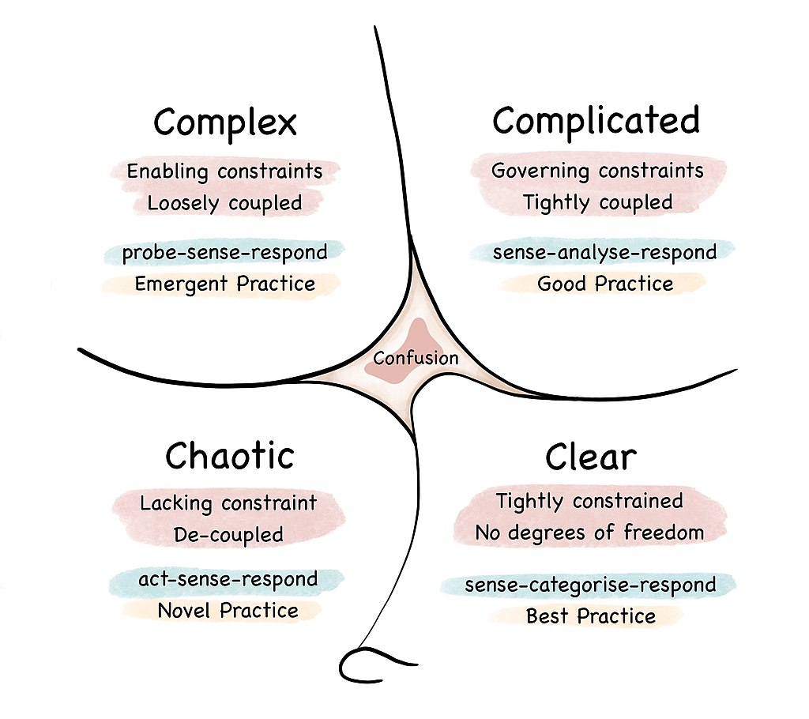

Sense making for product managers

Cynefin is a framework for making sense of different situations, depending on how predictable or unpredictable they are. Wardley Mapping is a method for developing strategy, depending on the maturity and visibility of the components involved. There are some obvious commonalities between them, and both are helpful for making decisions - but what is it that makes them different? And what can we do differently by looking at them together?
Objective 1:
Everyone on the team understand sense-making and system thinking and can describe the 4 domains above.
Objective 2:
Folks who have tools to deal with complexity (multiple experiments, bottom-up strategies) are leading complex challenges as Amazon single threaded owners (STO).
Test: assess Martin vs John
Which of them considers software systems as complex and which one considers it complicated?
Martin:
“If you have to spend effort into looking at a fragment of code to figure out what it’s doing, then you should extract it into a function and name the function after that ‘what’.”
John:
“I’m not going to issue any mandates, but I want everyone to seriously consider some of these issues.
If a function is only called from a single place, consider inlining it.
If a function is called from multiple places, see if it is possible to arrange for the work to be done in a single place, perhaps with flags, and inline that.
If there are multiple versions of a function, consider making a single function with more, possibly defaulted, parameters.
If the work is close to purely functional, with few references to global state, try to make it completely functional.
Try to use const on both parameters and functions when the function really must be used in multiple places.
Minimize control flow complexity and “area under ifs”, favoring consistent execution paths and times over “optimally” avoiding unnecessary work.
To make things more complicated, the ‘do always, then inhibit or ignore’ strategy, while a very good idea for high reliability systems, is less appropriate in power and thermal constrained environments like mobile.”
John’s looks at software systems as a complex challenge while Martin see them as complicated.
Reflection
Write it down: How would you find quickly if someone has the tools to deal with a complex challenge? Can you use Myers–Briggs Type Indicator (MBTI)? Does J represent complicated and P complex?
Links
- Cynefin framework: https://en.wikipedia.org/wiki/Cynefin_framework (1 minute to stare at the domains diagram) *Reflections on a decade of coding: https://www.scattered-thoughts.net/writing/on-bad-advice/ (1 hour of reading)
- Myers-Briggss Type Indicator: https://en.wikipedia.org/wiki/Myers%E2%80%93Briggs_Type_Indicator (Weekend reading. Skip to test)
- Myers-Briggss Personality Test: https://www.16personalities.com/free-personality-test (20 min)
Cynefin Dynamics
- Innovation cycle. Example: Pokemon Go. This lead to innovations like Pokemon Go.
- Shallow dive into choas.
- Small precentage of things stablize.
- Chaos grazing.